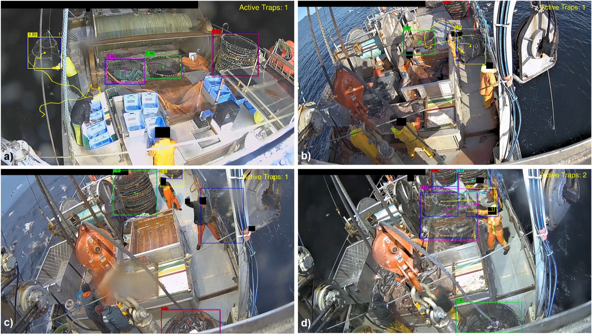

Spatio-temporal action detection
Localizing who does what, and when, efficiently across long videos.
Draw a box
Everything a model sees, and the small part worth a person’s attention.
Research
Five threads, one goal: video models that are fast enough, light enough, and robust enough to leave the cluster.
Localizing who does what, and when, efficiently across long videos.
Motion-aware models that reason about events, not just frames.
Recognizing actions while protecting the identity of the people in frame.
Deployable perception for maritime and ecological monitoring.
Robust analysis pipelines for clinical and biomedical imaging.
About
I'm a PhD candidate in Electrical and Computer Engineering at the University of Victoria, in Dr. Alexandra Branzan Albu's Computer Vision Lab. I teach machines to read what people are doing in video, fast enough and light enough to run outside a research cluster.
In practice that means spatio-temporal action detection, motion-aware video understanding, privacy-preserving perception, and models built to hold up in the wild.
The work has left the lab. First author at WACV 2027, and of three oral papers: ECCVW 2026 (the 2nd Marine Vision Workshop at ECCV), ICPR 2026 and CRV 2025. It also powers Archipelago Marine Research's FishVue platform, which took the 2026 VIATEC Innovative Excellence Award. I taught UVic's Medical Image Processing course (ECE 435 / BME 403) as sole instructor from January to April 2026, supported by a $10,000 President's Fellowship in Research-Enriched Teaching.
What I care about is computer vision that survives the messy parts: the open sea, bad light, occlusion, motion blur. Not just a clean benchmark. If that sounds like your problem too, let's talk.
Selected projects
From reviewer guidance to lightweight action detection and privacy on working vessels.
Publications
Peer-reviewed work on action detection, at-sea monitoring, and video understanding. The ECCVW, ICPR and CRV papers were oral presentations.
Teaching
Jan – Apr 2026
ECE 435 / BME 403, Medical Image Processing. University of Victoria.
2024 – 2026
ECE 471, Computer Vision (2024) · ECE 537, Applied Data Analysis (2025, 2026).
2023 – 2026
Control Systems, Digital Design, VLSI Systems, Electronic Circuits, Signals & Systems. University of Victoria.
Honors & awards
$10K
Research-Enriched Teaching, 2025.
Top 1%
Ranked in the top 1% nationally.
Top 3%
Ranked in the top 3% nationally.
Industry impact
My research feeds Archipelago Marine Research's FishVue, the platform that automates catch and compliance monitoring on commercial fishing vessels. It helped FishVue win the 2026 VIATEC Innovative Excellence Award.
Read about the award
Contact
Working on video understanding, deployable computer vision, or perception in messy real-world conditions? Email is the fastest way to reach me. I read every note.
Victoria, BC, Canada · 48.43° N, 123.37° W